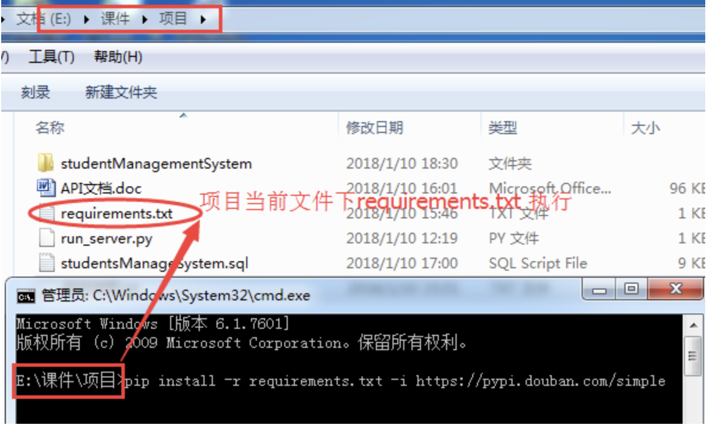
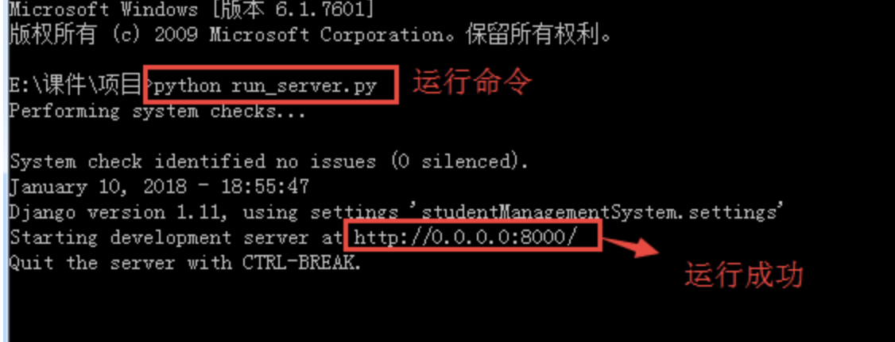
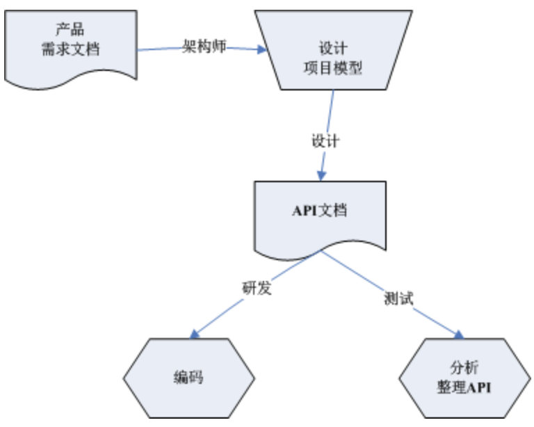
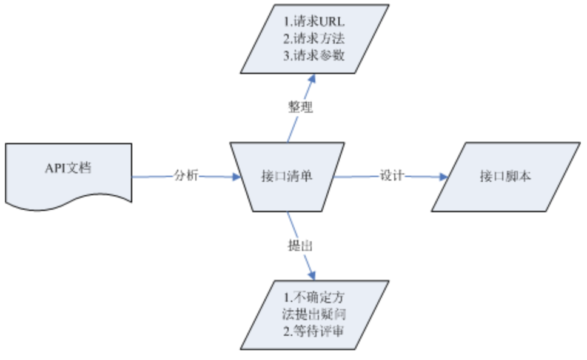
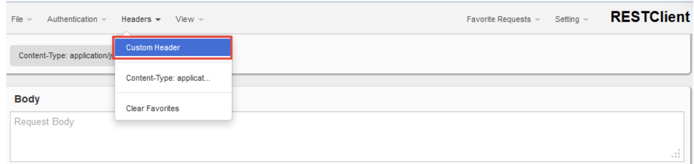

案例-《学生信息管理》
目标：
- 验证RESTful风格，加强理解；
- 通过实践，理解接口测试；
1、背景：
学生信息管理系统中接口采用了标准RESTful架构风格，帮助同学们更深切理解RESTful
2、简介:
学生信息管理系统的功能是收集学生的个人信息，以便向老师提供每个学生在校或毕业生学籍的情况，还可以让学生用自己的学号去查看自己在校期间的表现。
3、环境搭建
1). 安装Python3(3.5以上版本)
2). 搭建图书管理项目环境（安装依赖模块）
在项目当前文件夹下,运行以下命令：
pip install -r requirements.txt -i https://pypi.douban.com/simple

运行
python run_server.py
RestClient/Postman安装完毕
在浏览器上输入http://0.0.0.0:8000/查看接口文档
4、API接口清单
4.1 API文档由来

4.2 API文档作用

4.3 API接口清单
一、查询
1.1学院-查询所有
请求方法：GET
请求地址：http://127.0.0.1:8000/api/departments/
1.2学院-查询指定
请求方法：GET
请求地址：http://127.0.0.1:8000/api/departments/T02/
（注：T02为学院ID；）
1.3根据指定参数进行学院-List-$dep_id_list的相关查询
请求方法：GET
请求地址：http://127.0.0.1:8000/api/departments/?$dep_id_list=T01,T02,T03
(注：$dep_id_list：为参数名称;T01,T02,T03为:学院ID;)
1.4学院-List-$master_name_list查询
请求方法：GET
请求地址：http://127.0.0.1:8000/api/departments/?$master_name_list=Java-Master,Test-Master
(注：$master_name_list：为参数名称;Java-Master,Test-Master为:院长名称;)
1.5学院-模糊
请求方法：GET
请求地址：http://127.0.0.1:8000/api/departments/?blur=1&dep_name=C
(注:blur：为开启模糊查询参数1为开启；dep_name：为参数名称；C：学院名称包含字符；)
1.6学院-组合
请求方法：GET
请求地址：http://127.0.0.1:8000/api/departments/?slogan=Here is Slogan&master_name=Test-Master&dep_name=Test学院
(注:dep_name：学院名称；master_name：为院长名称；slogan：学院口号；三个条件可随意组合或单独使用)
二、新增
2.1学院-新增
1) 请求方法：POST
2) 请求地址：http://127.0.0.1:8000/api/departments/
3) 请求JOSN报文：
4) 调用传入的json串如下（可新增多条，之间用,隔开）：
{
"data": [
{
"dep_id":"T01",
"dep_name":"Test学院",
"master_name":"Test-Master",
"slogan":"Here is Slogan"
}
]
}
5) 新增成功返回报文：
{
"already_exist": {
"results": [],
"count": 0
},
"create_success": {
"results": [
{
"dep_id": "T02",
"dep_name": "Java学院",
"master_name": "Java-Master",
"slogan": "java"
}
],
"count": 1
}
}
6) 新增失败id已存在-返回报文：
{
"already_exist": {
"results": [
{
"dep_id": "T01",
"dep_name": "Test学院",
"master_name": "Test-Master",
"slogan": "Here is Slogan"
}
],
"count": 1
},
"create_success": {
"results": [],
"count": 0
}
}
7) 新增失败json格式错误：
{
"status_code": 400,
"detail": "请求体参数格式错误。"
}
三、更新
3.1学院-更新
1). 请求方法：PUT
2). 请求地址：http://127.0.0.1:8000/api/departments/T03/
(注：1：为学院ID)
3). 请求JOSN报文：
{
"data": [
{
"dep_id": "T03",
"dep_name": "C++/学院",
"master_name": "C++-Master",
"slogan": "Here is Slogan"
}
]
}
4). 修改成功返回：
{
"dep_id": "T03",
"dep_name": "C++/学院",
"master_name": "C++-Master",
"slogan": "Here is Slogan"
}
四、删除
4.1学院-删除单个
请求方法：DELETE
请求地址：http://127.0.0.1:8000/api/departments/T03/
(注:10为学院ID)
4.2学院-删除多个
请求方法：DELETE
请求地址：http://127.0.0.1:8000/api/departments/?$dep_id_list=8,9,11
(注:$dep_id_list：为参数名称；8,9,11：为学院ID)
注意
RESTClent:插件使用时信息头要设定：Content-Type application/json
